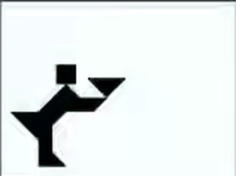
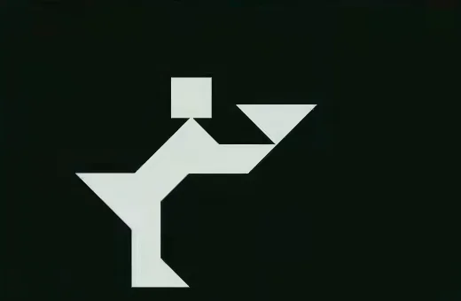
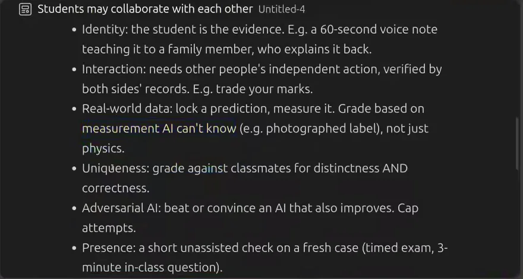
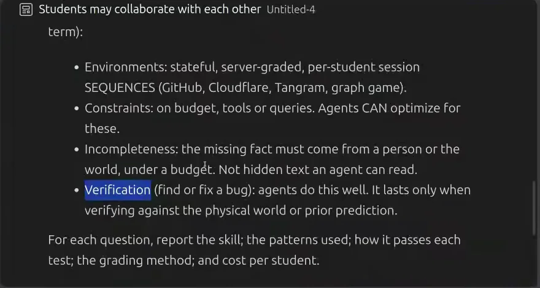
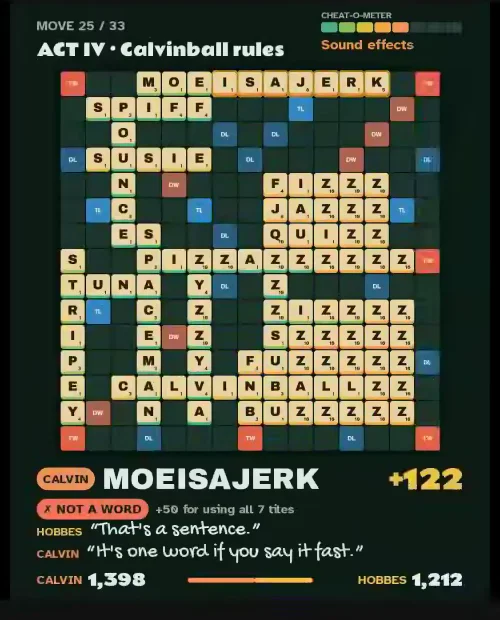

![Eight-panel comic of the meeting. 1: the course team designs assessments live while students watch. 2: assume every student has an AI sidekick; good questions must still teach something real. 3: each idea runs an obstacle course of six hurdles: real learning, no easy forwarding, no solver sharing, a human in the loop, hard to game, easy to grade. 4: a toolkit of durable skills: identity, negotiation, real-world validation, hidden requirements, deployment, verification, metacognition. 5: invoices scattered among students who trade and negotiate to reconstruct each client, with rate limits and no shared folder. 6: a prediction market on AI Pipe token spend where students update beliefs as signals arrive. 7: reward the correct outlier, pulling agents away from the bland average. 8: the bigger lesson: framing, steering agents, verifying and refining the rules together, with vignettes of the Tangram precision issue, the collapsed-question fix, USB-debugging a phone and a Google Meet collaboration.](comic-page.avif)
It looked right. It didn’t pass.
An hour and six minutes into the meeting, after most of the teachers had left, a student named Shreenish asked to share their screen. Shreenish was careful about the word. “It’s not a bug,” they said, “but I’m facing this issue like just if — if I’m doing something wrong.” 65:49
On the screen was a question from the course’s first graded assignment: a Tangram. Seven flat pieces, one black target silhouette — a figure carrying a tray. On the game board in the next tab, Shreenish had built it. To the eye, it was the same shape.




Shreenish pasted the board’s signed answer into the exam. The exam replied, in red: “The submitted arrangement does not match your assigned target silhouette.” They had nudged the pieces one step at a time, they said, “but it is still showing incorrect.” 66:32
Fifteen minutes earlier the same student had made a different kind of complaint — that solved questions should collapse out of the way — and the professor had fixed it, more or less, on the spot, by dictating it to an AI. 51:05 One kind of feedback took a sentence to act on. The other nobody on the call could settle. Was the arrangement off by a hair? Was the tolerance invisible? Was the checker wrong? Witnessed All the recording proves is that it looked right and didn’t pass.
That gap — between work that looks done and evidence that something was learned — is what the whole meeting was about. To see why, rewind an hour.
“An internal ideation meeting you happen to be listening in on”
The meeting began the way most meetings do: waiting for people who were late. Then Anand gave up waiting and told the students on the stream what they had walked into. 01:09 The course team was going to discuss future graded assignments (GAs), projects and the remote online exam (ROE), out loud, with no agenda prepared for an audience.
“So, it’s almost like an internal ideation meeting you happen to be listening in on.”
Tools in Data Science has an unusual rule. The course page says it plainly: “You CAN copy from friends and AI. In fact, it’s part of the curriculum.” Share code, work in groups, use ChatGPT — in assignments, projects and the online exam; only the final in-person exam is closed. So the usual question-setter’s question, how do we stop them cheating?, is off the table. Anand stated the replacement in the first minute of substance.
“Look, people can and should use an agent to solve it. And they should collaborate, not just sharing answers but sharing tools that let it solve the problem.”
If agents and friends are permitted, a question that an agent or a friend can finish teaches nothing. But a question nobody can finish teaches nothing either. The design problem is to find work that agents help with but cannot trivially complete without the student becoming more capable — and to grade it, at the scale of an online degree, cheaply.
What this adds to the earlier talks. At the 5 October orientation the same team told students what to do: get the job done — and verify it. The August AMA asked what the course is really teaching; Let AI Take Your Exams made the case for letting agents sit the paper; and Anand’s essay How I use AI to teach explains the habit behind it. This meeting is the other side of the desk: the teachers trying to turn that philosophy into questions, and finding out how hard it is.
Before inventing questions, write the tests they must survive
Anand had come with a draft, open in an editor: a prompt Anand planned to give an AI that would draft new questions and check them. It opened with a checklist. Anand read it out. 03:54
![A VS Code note titled 'Students may collaborate with each other' listing six tests: 1 Learning test: is the step the student must do themselves the skill we want, and not just pointless difficulty? 2 Forward test: does one student's submission score for another? 3 Solver test: would one shared tool score for everyone? 4 Agent test: could Codex solve the question with the student's logged-in browser or terminal? 5 Faking test: is faking costlier than doing it honestly, and does faking still teach? 6 Oracle test: is grading server-side, robust and rate-limited or revealed after the test? Below: aim for about 50% of students scoring correct, with a wide spread.](assets/six-tests.webp)
Notice what the tests are not. None asks whether the question is hard. Two ask whether it can be passed on (an answer, a solver). One asks whether an agent can do it alone. One asks whether gaming it costs more than doing it — and whether gaming it still teaches, which is a generous idea of cheating. One asks whether it can be graded without pain. And the first asks whether the effortful part is the skill at all, “and not just pointless difficulty.”
Try them. Below are three versions of the same toy task, each a little better defended than the last. Hypothetical The verdicts are our reading, not the course’s.
Attack a question
Hypothetical questionsThe lab makes one thing obvious that the list hides: personalising a question fixes forwarding, not agents. Each defence pushes the work somewhere else — into the student’s own account, own data, own deployment — and the agent follows it there. Anand knew this. The draft listed patterns that help, and sorted them by how long they would last.




Two lines on screen deserve a margin note. One is the target: “Aim for ~50% of students scoring correct, with a wide spread.” Anand called that “the sweet spot for learning” 04:47 — Inference a working heuristic for item difficulty, not an established optimum; what a 50% item teaches depends on what the other 50% were missing. The other is a sentence Anand spoke rather than wrote: “Ultimately, in the future, your identity is an agent-proof skill.” 05:08 Research The US standards body for digital identity is less sure: NIST SP 800-63-4 spends pages on forged media, injected video and synthetic voices. Identity is a useful constraint today. It is not a proof.
JK’s question: do they know how they learned it?
JK — Jayakrishnan, who joined a few minutes late — listened to the checklist and agreed these were skills worth having: “we want it to transfer — both durable and transferable.” 06:55 Then JK added one Anand had not written down.
“The metaskill of metacognition, right? Are they able to do a ‘how they learned it’, right, either from agent or from their peer?”
Anand’s reply is worth quoting in full because it is so unusual from someone setting an exam: “Good point. Don’t know, worth evaluating, agreed.” 08:26
The conversation then took a turn that sharpened JK’s point. Hritik, a TA, shared news that Adobe-style apps had been rebuilt with AI and released for every platform — “a small company is able to release a state-of-the-art application” 09:28. Anand said one of them, a PDF editor, was in use “left, right, and center as an Adobe Acrobat replacement.” 09:00 If one person with an agent can build an Acrobat, what is left to teach? Anand admitted not knowing: “what ambition is required to build software that … one person with an agent will struggle with?” Anand asked. “I can’t think of anything just yet.” 09:44 JK answered with the requirement nobody says out loud. Ask an agent for an Acrobat replacement and you may not think to mention signatures.
“How do you make implicit explicit? Exactly the exercise that we are doing right now.”
That is the most transferable sentence of the evening, and it described the meeting itself: a room of people trying to write down what they meant by “learning”. Anand agreed it should be taught and was candid about the gap: “it is not yet clear how. Let’s explore.” 12:16
There is a reason to take JK’s seventh test seriously, and a reason not to trust the easy version of it. Research The National Academies’ How People Learn II treats monitoring and regulating one’s own learning as central to expertise. But a polished reflection can itself be written by an agent. And the starkest evidence on AI help comes from a classroom where everything looked like learning.
Inference TDS is not a high-school maths class, and its exam is not unassisted: the skill it wants may be working with agents. But the lesson carries. A correct submission made with help is evidence about the submission, not the student. Anand’s own “Presence” pattern — a short unassisted check on a fresh case — is the kind of measure that could tell the two apart. The meeting did not get to how it would be used.
The invoices are in someone else’s pocket
With the tests on the table, Anand turned to Project 1. The first idea did not try to out-think the agent. It changed where the information lived. 13:12
“Keeping that interaction principle in mind, one exercise that I’m considering for projects is: trading for information.”
Each student would process the invoices of one client — except that the invoices would be scattered across other students. (The numbers moved during the conversation: 50,000 invoices for 1,000 clients at first, a different figure later. They were brainstorming quantities, not a spec.) What would people trade? Invoices, tokens, marks — “something to explore to see what kinds of real-world strategies a human and an agent can come up with for large-scale collaboration as well as defection.” 14:18 Anand’s summary of the human part was blunter: “you don’t like somebody, you don’t want to give them your invoice, let’s deal with it.”
The agent can do the parsing. It can even plan the negotiation. Anand’s bet was on something earlier: “Knowing to ask these questions is probably the important part today.” 14:18
Then came the most interesting disagreement of the evening. JK, speaking from a context JK knew well, suggested giving students pointers: tell them that “your invoice 13, 14, and 15 have been sent to so-and-so people,” so they learn which nodes to search first. 16:22 Anand pushed back. Left alone, students would self-organise — a shared sheet, a shared folder — “except for the 20% holdouts” who show up the day before the deadline. Hand them the map and you lose that.
“The providing of that information can possibly eliminate a self-organizing mechanism that might evolve otherwise.”
Anand I’m not saying no, let us not provide any signals. I’m saying let us not provide the answer itself as a signal. 18:14
JK Certain people will have more information. That is the information asymmetry, so to speak. 18:21
Anand If there is a cost to fetch the invoice, even if it is a rate limit … the original idea of how do you search for information comes into the skillset directly. 18:39
JK Classic knowledge management problem. 19:31
Neither was wrong; they were choosing what the task would measure. Try the three versions yourself. You need the eight invoices of your client. They are held by your classmates; you can afford six requests. Hypothetical The 20% holdouts are Anand’s illustration, not a measured rate.
Find your client’s invoices
Hypothetical network- Requests used
- 0 / 6
- Invoices found
- 0 / 8
- Auditor’s gap
- 100% of value missing
Play it a few times and the trade-off becomes concrete. With no map, the task measures search under a budget. With pointers, it measures following clues. With a shared folder, it measures almost nothing — except who the holdouts are. And in every version, one invoice sits with a classmate who never replies. No strategy recovers it. Inference That is realistic, and it is also a grading problem we will meet again in Act III: your score now depends on someone else’s behaviour. The meeting ended this thread with a promise, not a decision — Anand would take “a shot at sharpening this” for the Wednesday call 19:46, and JK framed what should survive any rewrite: “there is an information distribution and the idea is to self-organize and figure out.” 20:02
Predict the number. Or push it.
The second idea grounded a prediction in something real: how much students would spend through AI Pipe, the proxy that gives the class its LLM tokens. 20:14 Students would buy and sell claims on future spend, like a stock market — and Anand saw the flaw in the same breath.
“A: this is influenceable, at least partly, because if I want to increase the spend … I can push. I can get a whole bunch of people to push it up.”
JK sharpened it: “Or you can have a network of people work to push it up.” 21:18 Anand did not treat this as a bug. Coordinating on a number and then coordinating to hit it, with an agent advising on the trades — “that becomes powerful.” JK wanted “a dashboard which talks about the AI pipe token on a daily basis” 22:06, and raised the mess of reality: students on their own keys, a day the credit balance ran out. “But that’s what happens with the stock market,” said Anand. 23:18
Anand wanted the pattern more than the instance: “Prediction is probably one of the key skills we have to learn.” 23:44 Who would teach it? Not the TAs, Anand decided: “We should get a super-forecaster to teach.” 24:59 JK suggested the experts might already be in the class, working professionals who trade, with TAs “converting it into agentic format.” 25:58 (Later, Carlton ran a poll; three people said they had trading experience. 45:58)
Here is the problem in one chart. Two students forecast the month’s spend. One forecasts. The other forecasts high, then spends credits to make it true. Hypothetical numbers
Forecast versus control
Hypothetical spendResearch Markets are not magic here. A 2025 field experiment that randomly shocked prices in 817 real prediction markets found the effects were still detectable 60 days later; bigger, more liquid markets were harder to move. That is manipulation of the price. The TDS idea invites something closer to manipulating the outcome, which a 2026 working paper on settlement manipulation studies in contracts whose settling price traders can move. Inference Both can be good lessons. They are different lessons. If influence is the skill, grade coordination. If forecasting is the skill, grade calibration on a number students cannot move — with a proper scoring rule, not profit. The meeting left pricing, payout and settlement rules open. Multiplayer games went to the bonus pile, so the team could see “how students are interacting” first. 26:54
Calvin scores 957. On a double word.
The third idea came from a weekend re-reading Calvin and Hobbes. In one strip Calvin plays ZQFMGB in Scrabble and claims 957 points on a double word score. 28:19 Anand’s first reaction was arithmetic: “Wait, hold on, double word score means even numbers.” 28:53 Then Anand asked Claude to find a game in which it could happen anyway.

The trick is the crosswords: one move scores every word it touches, so the total need not be even. But the point Anand drew was not about Scrabble. Agents now find counterexamples by deep search, and a search problem has many needles. So reward different needles.
“If you have the same counter-example as someone else, both of you get zero … allowing us to teach how to get an agent to find what is away from the mode.”
Hritik recognised the format at once: the BBC quiz Pointless, where a hundred people are surveyed and the best answer is one none of them gave. “Oh, it should be a correct answer, but it should be a pointless.” 32:04 JK liked that it was “rewarding outliers.” 33:07 Later Anand put the rationale in one line: “Since models typically generate the average of human knowledge, your ability to push this away from that as far as possible while still maintaining correctness is the uniqueness skill.” 41:26
Research There is real support for the worry. In a Science Advances experiment, writers given AI ideas produced stories rated more creative individually — and more similar to each other. That supports homogenisation in some settings, not a literal “average”. But scoring rules for rarity have their own failure modes. Here is a cohort of 25 answers to a classic: find an n for which n² + n + 41 is not prime. Hypothetical answers
Score the outliers
Hypothetical cohort of 25| n | Students | n² + n + 41 | Score | Score bar |
|---|
Rarity without validity rewards noise. Duplicates-score-zero punishes the honest majority and rewards hiding answers. And distinct numbers are not distinct ideas: 40 and 81 fail for the same reason. Inference The defensible version scores correctness first, then distance between mechanisms, which needs a validator that understands the domain — the kind of automatic checker that makes systems like DeepMind’s AlphaEvolve work. Anand’s instinct for the format was a GA question asking for “a prompt that we can benchmark” rather than an answer. 32:57 Anand made a note to add it. 33:24
“What is the objective in terms of what the learning outcome is supposed to be?”
Thirty-eight minutes in, JK turned to the audience. “Till now it was a closed game between us. So any questions, suggestions?” 38:09 Nothing happened.
Carlton I think they’re just stunned silence. 38:36
Anand It’s a normal session.
Hritik Like most of the things they’re like going over their head.
Anand That is also normal for us.
Anand And crazy is not bad. You not understanding what you’re saying is also not bad. 39:21
Then a student unmuted and asked the question a curriculum committee would ask.
“If you could just briefly summarize what is the objective in terms of what the learning outcome is supposed to be? That might be helpful.”
Anand answered crisply, idea by idea. The invoices: “The objective is to strategize information sourcing when you are not completely aware what information resides where” — the skill, Anand added, that “we hired an entire team of consultants for” and were and was “selling like hotcakes.” 39:42 The market: “make good predictions, and revise your predictions as information changes.” 40:33 Pointless: push away from the average “while still maintaining correctness.” 41:26
Shreenish did not stop at objectives, and asked what any student asks of any rubric.
“Students will have some expectation, right? That if I do X, Y, and Z or if I achieve this, then I get a certain score. So what will — what do you suggest?”
This was the moment the evening turned from philosophy into assessment. Anand reached for a real-world grader: “I would act as and evaluate as auditors.” An accountant who misses invoices is judged by the value of the gap and the number of missing entries — “There probably are a few other factors involved here.” And then, unusually: “Should I simplify that?” 42:55
“I think as when you create the spec on Wednesday, then we’ll probably have a better handle on whether the marking scheme will work or not.”
That is a reviewer’s verdict, delivered politely: come back with the spec. Inference The auditor’s loss function is a good start — it is what the “Auditor’s gap” in the invoice lab above computes — but it does not yet say what the full set is, how duplicates count, or what happens when the gap is a classmate who never replied. Those are the questions that decide whether a grade is fair.
“Project 1 is not yet decided yet. So if you have any other ideas, you could present them here.”
“We wanted to loop you in partly to understand how and why we create the questions we create, and the level of ignorance that we have in as fast a changing field as this.”
JK compared it to a wedding: speak now or forever hold your peace. Anand preferred “If you want to change the rules of the game in your favor —” 44:52 The invitation had a deadline (post on Discourse before the Wednesday 9:30 meeting 45:30) and a condition. Carlton said the sessions would only continue if students used them: “make use of this opportunity to at least, you know, express your thoughts or feelings or opinions.” 50:26 Anand offered a reason even for people who had nothing to suggest: “it will be practice for you to see how you can steer a discussion where you have very little context.” 49:59
A student files a feature request. The professor dictates it to an agent.
Shreenish took Carlton at their word. There were two complaints about the exam portal. First, solved questions should collapse: “if we have completed a question, we can just like pull up — pull it up, so it will go up and it will appear as a single line.” 51:05 Second, one question had needed software that would not run on Shreenish’s laptop; it was solved on a college PC, and could not be resubmitted later from the laptop.
“The second is intentional. The first … let’s fix now.”
Anand shared the screen, opened ChatGPT, and spoke the request into it. What Anand said is a small masterclass in delegation: the problem, the user’s suggestion, a constraint, a quality bar, and a check.
![A ChatGPT message box containing dictated text: '…clear, strong enough visual indicator that the question has been solved. And one of the students suggested that we might perhaps collapse the question by default. Of course, somebody can expand it, clearly visually indicating that it is collapsed because it's solved, etc. We don't want to change the UI too much. It's a minimal, elegant solution for this. Explore and implement in a way that doesn't modify the code too much, and inspect the screenshots to see if that, from a usability perspective, is the right kind of change.'](assets/ui-prompt.webp)
Carlton asked why Anand used ordinary ChatGPT rather than its Work mode, which is pitched for coding. The answer was economics, not capability: “Work charges me or drains my tokens. Chat does not.” 54:02
Did it work? Inference The call does not show a result. The exam engine’s repository history shows a commit that evening titled “Collapse solved exam questions with clear status badge.” Whether that is live, and whether students find it clearer, is a separate test — the same one the prompt asked the agent to run. What the scene does show is the course’s loop performed by both sides of the desk: a student specifies, a teacher delegates, an agent builds, and someone still has to check.
And the second complaint? “Intentional” means a design choice, not an oversight. Inference But it is also a hint of the fairness question to come: when a question needs a capable laptop, the score partly measures the laptop.
Every “agents can’t do this” has a shelf life
Earlier, Anand had floated an idea for Project 2: at a set time, join a Google Meet and “literally stand and hold hands so that you touch your neighbor.” Why? “I don’t see an agent being able to do that just yet.” 34:15 JK immediately raised the problem of evaluating it: “I don’t know how you are going to evaluate it.” 36:46
Twenty minutes later, a TA quietly moved the fence.
“I have once managed a ChatGPT chat to operate my mobile.”
How? “USB debugging. Just a Type-C cable.” 55:20 With Android’s adb command-line tool, the chat built a mobile app, took screenshots from the phone and tested it. Anand had a mobile agent tool on a to-try list and hadn’t tried it yet, and went straight to an assessment: “take a selfie with a classmate at a physical location using an application that we write.” 57:17 Jaideep asked whether app-store rules would get in the way 58:49; Anand’s goal was more modest — an app on a student’s own developer phone. (Anand also speculated about unikernels and app-store politics; those were opinions, not findings.)
At the very end, Carlton moved it again for the Tangram, suggesting Shreenish “give MCP access to your browser to GPT, and then it can literally look at the code that is underlying the application itself.” 68:11
Inference The patterns that “last” are not walls; they are interfaces agents haven’t been given yet — a phone, a camera, a browser, a meeting. Each time a student plugs one in, last week’s human-only task becomes this week’s delegation. That is good for the course’s stated aims. It is bad for any assessment whose validity rests on “agents can’t”. And “physical presence” tasks carry costs the meeting did not discuss: consent for photos, students who cannot travel or appear on camera, and accessibility.
Brute force, a histogram, and a Tangram
At the hour, Anand closed the meeting. 60:10 Carlton stayed on with a disclaimer: “there’s no promises that I have answers either because much of this what they’ve discussed today is new to us as well.” 60:52 Shreenish had three more things to say, and each one examined the examiners.
“There was one question which answer was 71. So I just like tried brute force till 71 and got it correct. So I think, like, it can be made a bit harder.”
A student asking for a harder question is the faking test, run by the student. Carlton’s answer, through a connection that kept dropping, was that GA0 had been kept virtually the same as last term on purpose: JK wanted a baseline to see whether knowledge from previous cohorts was being carried over, “by looking at the distribution of the scores of GA0.” 63:25 Some questions are easy by design, so that everyone can do something. And then Carlton said something that sounds reasonable and isn’t.
“If we get a bimodal normal distribution, we know that the evaluation is roughly fair.”
Carlton was candid about the pressures behind it — complaints from students and from the programme if marks are too low. But Research the NCME classroom assessment standards locate fairness in what a score means for whom: whether it measures the intended skill, consistently, without bias, with accommodation and appeal. A histogram’s shape cannot show any of that. Here is why. Hypothetical cohorts
Same histogram, two stories
Hypothetical 200 studentsThe same caution applies to the GA0 baseline. Inference If this term’s distribution shifts, it could be transfer from last term — or shared answers, better models, a different cohort, or a smoother portal. Telling them apart needs a fresh variant, not a reused one.
Then came the Tangram from the top of this story. Shreenish had been pointed to Agrim, the TA who integrated the question; Agrim did not seem to be on the call. 66:41 Carlton relayed what the team had been told about it.
“Sometimes it can be off by a very small amount and students will still get the wrong answer. The idea is to actually get an agent to solve the question. Because an agent will do it very precisely, whereas if a human does it, you’re almost always likely to get it wrong.”
That is a legitimate design — the question sits under “Environments” in Anand’s list of patterns that teach agent-driving. But from the outside, a precision failure and a broken checker look identical. Which of these explanations can you rule out from the screenshots? Our analysis
Why didn’t it pass?
Four hypothesesFrom the screenshots alone, none can be ruled out. That is the finding. Carlton’s advice was the right one: post it on Discourse, “because if there is a bug, others may be facing it.” 68:51
And then, the last exchange of the evening — the one that answers the question the meeting kept asking. Shreenish said GA1 had changed their workflow. In GA0 they had copied code into GitHub by hand and deployed it on Vercel; now “I can give ChatGPT the access of like Vercel and GitHub. So I just like submitted it and the ChatGPT like does it everything in the background.” 67:41 Inference That is one self-reported change in workflow — real, specific, and exactly what the course hopes for. It is not yet evidence that Shreenish could do it with a different stack next month. That would be the next test.
Every question you set is a claim about learning
Strip away the invoices, the markets and the Scrabble, and the meeting was doing something rare in public: stating a hypothesis about what a task will teach, then letting people attack it. The teachers attacked it with six tests. JK attacked it with a seventh. A student attacked it with three questions — what will they learn, how will you grade it, why didn’t this pass — and every one of them landed.
The meeting left most of its contradictions open. They are worth keeping in view, because each is a design choice, not a mistake:
What would settle them is not a better idea but a better procedure. Here is the one this story suggests, built from the meeting’s own tests plus what the student added. Proposed next experiment Nothing in the meeting shows whether any of these assessments teaches its claimed skill. This is how you would find out.
An assessment design protocol
Your notes stay in this browserName the human capability
What should the student be able to do afterwards, with agents allowed? What would show they can’t? (JK: “make implicit explicit”.)
Shape the task so that capability is the hard part
Put the effort where the skill is — hidden information, a forecast, a requirement nobody stated — not in friction. (Learning test.)
Attack it: agent alone, shared answer, shared solver, collusion, faking
Give a strong agent everything a student has. Ask students to break it. Write down what each attack achieves. (Forward, solver, agent, faking tests.)
Grade with a checker you have checked
Run a reference solution and near-misses through it. Publish tolerances. Give students a debug view and an appeal. Check who scores low and why — not the histogram’s shape. (Oracle test, plus the Tangram.)
Look for transfer
Later, a fresh case with changed tools, data or constraints. Did the capability reappear without the scaffold? Only then call the question a success. (Anand’s “Presence” pattern.)
The course already does parts of this. It publishes its assignments, lets students argue with the marking, and — as this meeting showed — lets them watch the questions being invented. The missing piece is step 5, and it is the hardest one: a correct submission today is the start of the evidence, not the end of it.